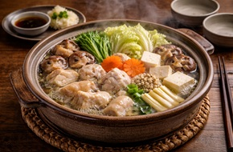
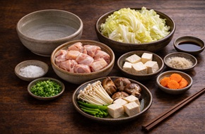
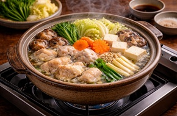

Mizutaki
Mizutaki is a traditional Japanese hot pot dish made with chicken and vegetables. It is light, healthy, and often enjoyed with family or friends.

Mizutaki is a traditional Japanese hot pot dish made with chicken and vegetables. It is light, healthy, and often enjoyed with family or friends.

